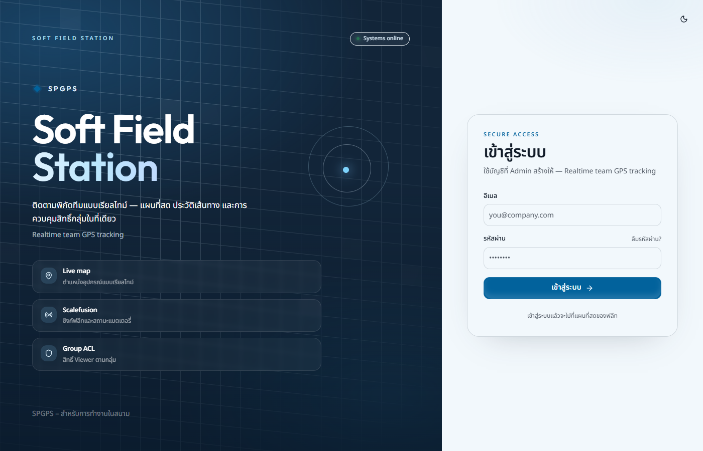
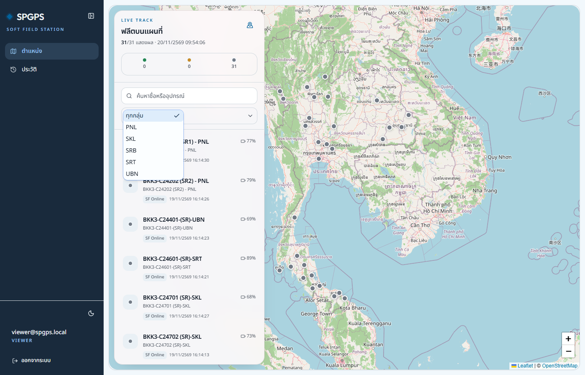
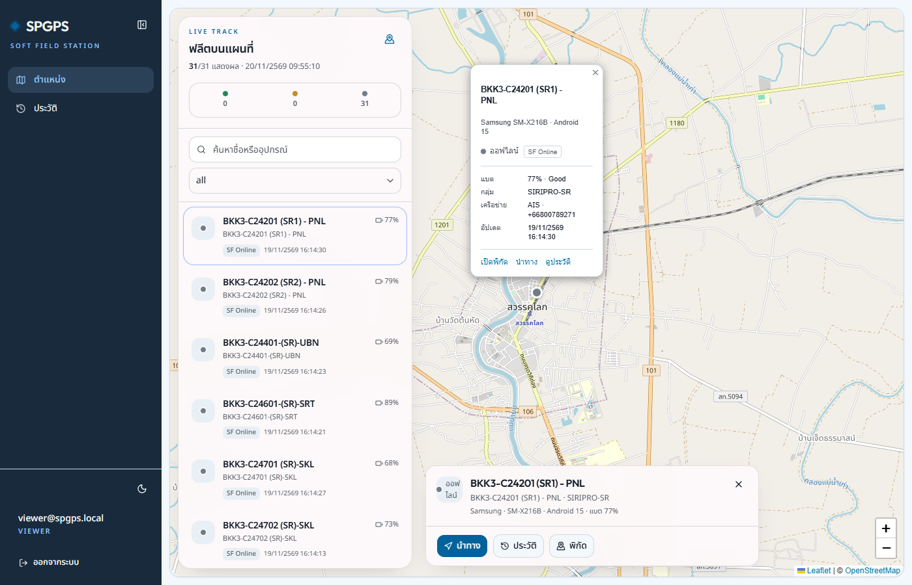
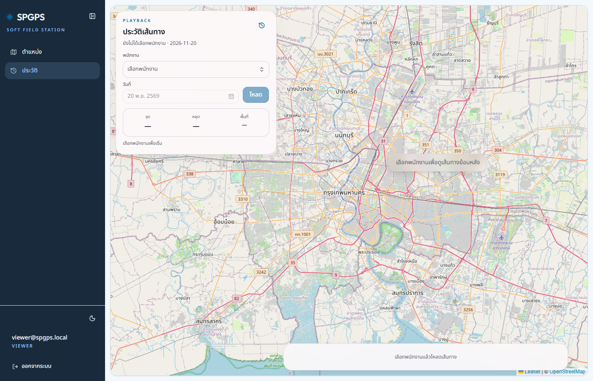
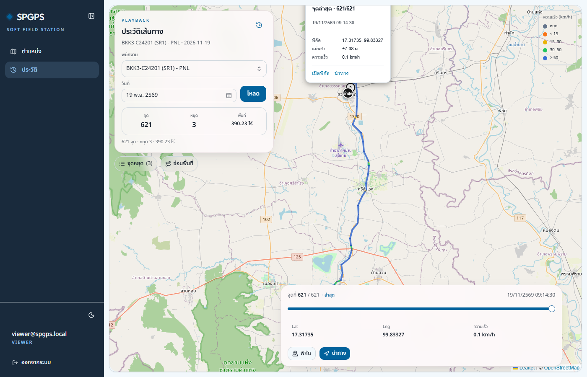

SiriPro GPS
คู่มือการใช้งาน SiriPro GPS
สำหรับผู้ใช้ทั่วไป (Viewer)
ติดตามพิกัดทีมแบบเรียลไทม์ — แผนที่สดและประวัติเส้นทางบนเว็บเบราว์เซอร์
วิธีได้ไฟล์ PDF: กด Ctrl+P (หรือ Cmd+P) → เลือกเครื่องพิมพ์ Save as PDF / Microsoft Print to PDF → บันทึก
1. บทนำ
SiriPro GPS เป็นระบบดูตำแหน่งทีมงานบนแผนที่ และดูประวัติเส้นทางย้อนหลัง ผู้ใช้ทั่วไป (Viewer) จะเห็นเฉพาะกลุ่มที่ผู้ดูแลระบบมอบสิทธิ์ให้
สิ่งที่ต้องมี
- บัญชีอีเมลและรหัสผ่านที่ผู้ดูแลระบบสร้างให้
- การเชื่อมต่ออินเทอร์เน็ต
- เว็บเบราว์เซอร์ (เช่น Chrome, Edge)
- ที่อยู่เว็บขององค์กร (URL ที่ผู้ดูแลระบบแจ้ง)

2. เข้าสู่ระบบ
- เปิด URL ที่ผู้ดูแลระบบแจ้ง จนเข้าสู่หน้า เข้าสู่ระบบ
- กรอก อีเมล และ รหัสผ่าน
- กดปุ่ม เข้าสู่ระบบ
- ระบบจะพาไปหน้า ตำแหน่ง (แผนที่สด)
ลืมรหัสผ่าน
- ที่หน้าเข้าสู่ระบบ กดลิงก์ ลืมรหัสผ่าน? (อยู่ถัดจากคำว่า รหัสผ่าน)
- ทำตามขั้นตอนบนหน้าจอเพื่อรับลิงก์ตั้งรหัสใหม่ทางอีเมล
- ตั้งรหัสผ่านใหม่แล้วกลับมาเข้าสู่ระบบอีกครั้ง
4. ตำแหน่ง (แผนที่เรียลไทม์)
หน้านี้แสดงตำแหน่งล่าสุดของอุปกรณ์ในกลุ่มที่คุณมีสิทธิ์ดู แผงด้านซ้ายชื่อ ฟลีตบนแผนที่ ส่วนแผนที่อยู่ด้านขวา
อ่านสถานะคร่าวๆ
- จุดสีเขียว — ออนไลน์
- จุดสีส้ม — ไม่เคลื่อนไหว
- จุดสีเทา — ออฟไลน์
ตัวเลขใต้จุดสถานะคือจำนวนอุปกรณ์ในแต่ละสถานะ กดเพื่อกรองได้

ค้นหาและกรอง
- พิมพ์ในช่อง ค้นหาชื่อหรืออุปกรณ์ เพื่อค้นหาชื่อที่ต้องการ
- เปิดรายการกลุ่ม แล้วเลือกกลุ่มที่ต้องการ หรือเลือก ทุกกลุ่ม
- กดปุ่มสถานะด้านบนของแผง เพื่อกรองเฉพาะออนไลน์ / ไม่เคลื่อนไหว / ออฟไลน์

ดูรายละเอียดอุปกรณ์
- คลิกชื่ออุปกรณ์ในรายการ หรือคลิกจุดบนแผนที่
- อ่านรายละเอียด เช่น รุ่นเครื่อง แบตเตอรี่ กลุ่ม และเวลาอัปเดตล่าสุด
- ใช้ปุ่มลัดได้ตามต้องการ เช่น นำทาง, ประวัติ, พิกัด / เปิดพิกัด

5. ประวัติเส้นทาง
เมนู ประวัติ ใช้ดูเส้นทางย้อนหลังของพนักงานหรืออุปกรณ์ในวันที่เลือก
- เปิดเมนู ประวัติ
- ที่ช่อง พนักงาน กด เลือกพนักงาน แล้วค้นหาหรือเลือกจากรายการ
- เลือก วันที่ ที่ต้องการ
- กดปุ่ม โหลด

หลังโหลดสำเร็จ จะเห็นดังนี้
- เส้นทางบนแผนที่ (สีตามช่วงความเร็ว)
- สรุปจำนวน จุด, หยุด และ พื้นที่
- แถบเลื่อนจุดด้านล่างของแผนที่ เพื่อไล่ดูตามเวลา

6. เคล็ดลับและปัญหาที่พบบ่อย
ไม่เห็นอุปกรณ์บางเครื่อง
ผู้ใช้ทั่วไปเห็นเฉพาะกลุ่มที่ได้รับสิทธิ์ หากต้องการดูกลุ่มอื่น ให้ติดต่อผู้ดูแลระบบ
แผนที่ว่างหรือไม่มีจุด
- ตรวจว่าตัวกรองกลุ่ม สถานะ หรือช่องค้นหา ไม่ได้ทำให้รายการว่าง
- ตรวจว่ามีอินเทอร์เน็ต แล้วรีเฟรชหน้า
- ถ้ายังว่างทั้งกลุ่ม ให้แจ้งผู้ดูแลระบบให้ตรวจสอบการซิงค์ข้อมูล
เข้าสู่ระบบไม่ได้
- ตรวจอีเมลและรหัสผ่าน หรือใช้ ลืมรหัสผ่าน?
- บัญชีอาจถูกปิดใช้งาน — ติดต่อผู้ดูแลระบบ
ประวัติไม่มีเส้นทางในวันนั้น
ลองเปลี่ยนเป็นวันที่ที่มีข้อมูล หรือกด โหลด อีกครั้ง บางวันอาจยังไม่มีจุดในระบบ
ใช้งานออฟไลน์ได้หรือไม่
ต้องมีเครือข่ายในการดูแผนที่สดและประวัติ — ระบบไม่รองรับการดูพิกัดแบบออฟไลน์เต็มรูปแบบ